3.6 Erstes Projekt: Weinglas
Um ein Gefühl für Maya zu bekommen werden wir nun ein Weinglas modellieren und rendern.
Vorbereitung
Als erstes analysieren wir das Objekt was wir modellieren wollen. Ein Weinglas ist ein Schwingkörper, d.h. eine Kurve wurde um eine Achse rotiert und so ist der Körper entstanden. Wenn wir das Weinglas modellieren brauchen wir nur die Profil-Kurve zu zeichnen und im Anschluss diese um seine Achse zu drehen.
Als Referenzbild werden wir diese Profil-Kurve verwenden. Dieses Bild muss man in seinen aktuellen Projektordner unter “/source03_maya_basics/images” kopieren.
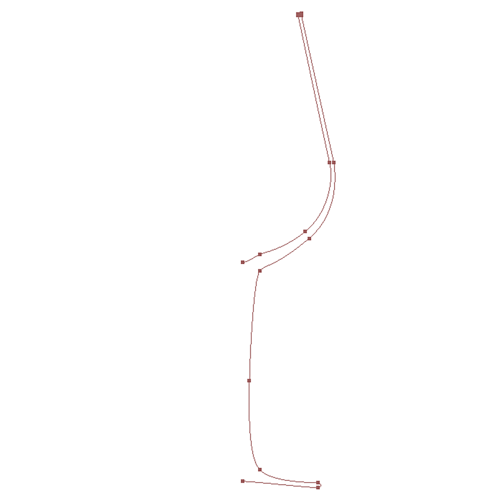
Modellieren
Für das Modellieren werden wir zwei Werkzeuge benutzen:
- Bezier-Curve-Tool
- Revolve
Schritt 1: Das Referenzbild Importieren
Zuerst wechseln wir in die Four View wechseln, hierfür kurz die Leertaste drücken.
Dann wechseln wir in die “side”-View hierfür den Mauszeiger über Side View setzen und wieder kurz die Leertaste drücken um die Side View als Single View zu erhalten.
Nun importieren wir die Profil-Kurve als Referenzbild indem man in dem Panelmenü und das Bild auswählt.
Nachdem das Bild importiert ist muss man die Position des Bildes anpassen. In der ChannelBox (Strg-A) den Wert “TranslateY” auf 10 setzen.
Ein weiteres mal Strg-A drücken um den Attribute Editor zu öffnen.
| Attribute | Value |
|---|---|
| Display | “looking through View” |
| Alpha Gain | 0.5 |
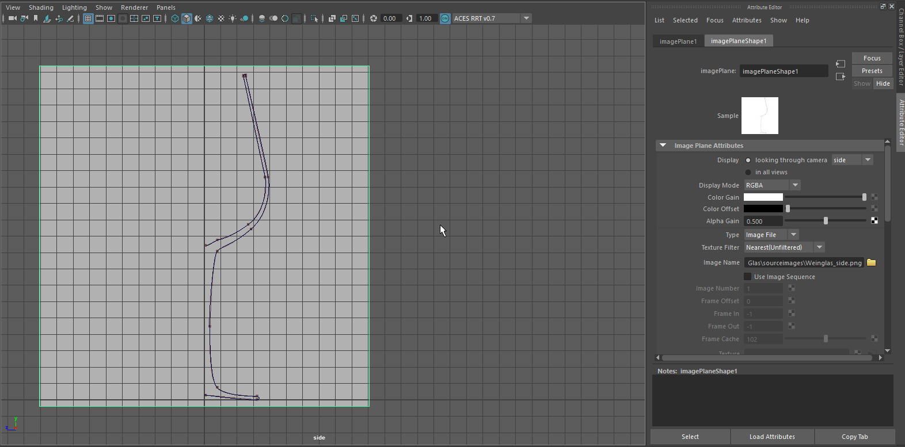
Speichern unter “weinGlas_01.mb”.
Schritt 2: Die Weinglas Modellieren
Nun mit dem Bezier-Curve-Tool die Kurve abpausen. Ein neuer Anchorpoint kann mit einem LMB Click-Drag gesetzt werden. Bei dem setzen des Punktes wird gleichzeitig die Krümmung der Kurve definiert.
Man sollte darauf achten das man so wenig Anchorpoints wie möglich setzt. Die Punkte werden immer dort gesetzt wenn sich die Krümmung der Kurve verändert, diese Stellen sind mit Punkten in der Profil-Kurve markiert.
Zusätzlich sollten die Anchor Tangent Handles so kurz wie nötig sein. falls sie zu lang sind kann man mit gedrücktem Shift und Click-Drag die Länge verkürzen ohne den Winkel zu verändern.
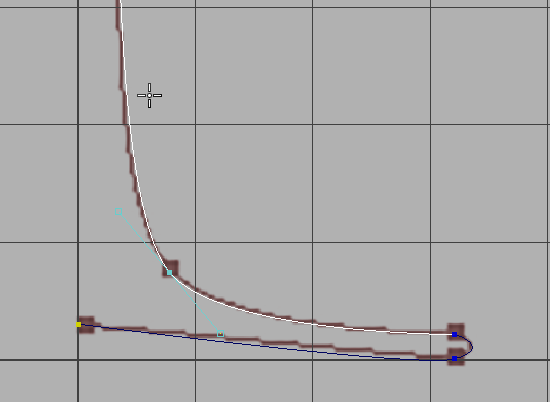
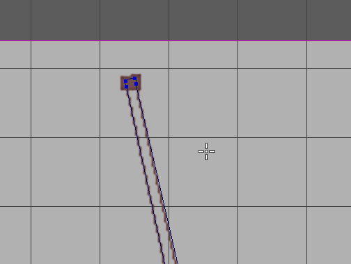
Ist man fertig mit dem Bezier-Curve-Tool drückt man Enter.
(optional) Ist man nicht zufrieden wie die Kurve gezeichnet wurde kann man die Kurve auswählen und nochmals das Bezier-Curve-Tool auswählen. Man hat dann die Option Punkte zu verändern und hinzuzufügen.
Die Kurve im Object Mode (RMB auf das Objekt > Object Mode) selektierten und auswählen.
(optional) Ist man mit dem Ergebnis nicht zufrieden, kann man Das Glas kann man mit dem Move Tool (W]) auf der Z-Achse bewegen (gelber Pfeil), damit die Kurve sichtbar wird. Verändert man nun die Kurve wird das Glas automatisch angepasst.
Das entstandene Objekt nennt sich “revolvedSurface1”, damit wir das Objekt später besser wiederfinden müssen wir es umbenennen. Im Channel Box Doppelklick auf den Namen „revolvedSurface1“ und benennt es “WeinGlas”.
Speichern unter “weinGlas_02.mb”.
Schritt 3: Hintergrund
Für den Hintergrund erstellen wir zwei Flächen, einen für den Boden und einen für eine Rückseite.
Hierfür mit .
In der ChannelBox mit LMB unter Inputs auf “polyPlane1” klicken, dann werden weitere Werte sichtbar. Nun geben wir folgende Werte ein:
| Attribute | Value |
|---|---|
| Width | 200 |
| Height | 40 |
| Subdivisions Width | 1 |
| Subdivisions Height | 1 |
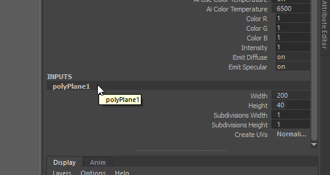
Wir werden nun die Fläche duplizieren und als Rückwand verwenden. Hierfür muss man die Fläche selektieren und dann (Strg-D).
Die neue Fläche ist eine exakte Kopie und ist an der gleichen Position wie die alte Fläche.
Um die Fläche zu sehen passen wir wieder folgende Attribute in der ChannelBox an:
| Attribute | Value |
|---|---|
| Translate Y | 20 |
| Translate Z | -20 |
| Rotate X | 90 |
Speichern unter “weinGlas_03.mb”.
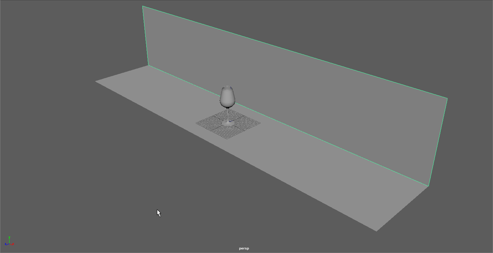
Schritt 4: Cleanup
Nachdem wir fertig Modelliert haben, müssen wir die Szene aufräumen. z.B. wird die Kurve und das Referenz Bild nicht mehr benötigt. Wir sollten auch allen Objekte einen leicht zu identifizierenden Namen haben.
Wir öffnen den Outliner (Windows > Outliner) hier sehen wir eine Übersicht über alle Objekte in der Szene.
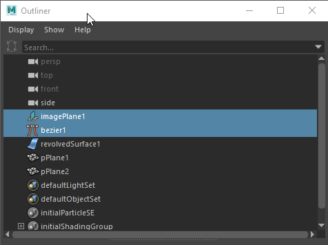
Mit gedrückter Shift Taste lassen sich mehrere Objekte selektieren. Wir selektieren “imagePlane1” (Das Referenzbild) und “bezier1” (die Profil-Kurve). Mit Entf löschen wir die Objekte.
Mit Doppelklick auf einen Namen kann man die Namen verändern. Wir benennen “revolvedSurface1” in “WeinGlas”, “pPlane1” in “Floor” und “pPlane2” in “Wall”.
Speichern unter “weinGlas_04.mb”.
Camera
Wir erstellen nun eine Kamera um den Bildausschnitt für das Rendern zu bestimmen.
- In dem Outliner die Camera “RENDER_CAM” umbenennen.
- Im Panelmenü auswählen. Nun schauen wir durch die Kamera die wir gerade erzeugt haben.
- Im Panelmenü aktivieren. Das Resolutiongate ist eine Rechteck damit man genau sehen kann was von der Kamera gerendert wird und was abgeschnitten wird.
- Nun können wir mit den bereits bekannten Kamera Werkzeugen (ALT-Maustasten) die Kamera positionieren.
- Ist man zufrieden mit seinem Bildausschnitt im Panelmenü auswählen.
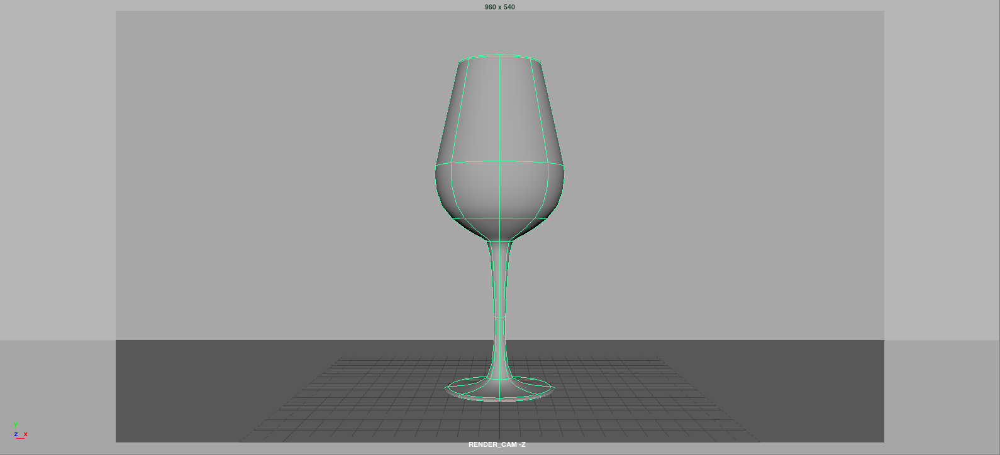
Speichern unter “weinGlas_05.mb”.
Lighting
Um das Licht in der Szene einfacher platzieren zu können, öffnen wir die Arnold Render View (). Standardmäßig wird die “persp” Camera gerendert. In dem Dropdown Menü sollten wir unsere “RENDER_CAM” (RENDER_CAMShape) auswählen. Da wir noch kein Licht in der Szene haben, wird ein schwarzes Bild gerendert.
Mit können wir ein Licht erzeugen. Das Licht ist sehr dunkel, daher setzen wir für die Intensity einen Wert von 1000.
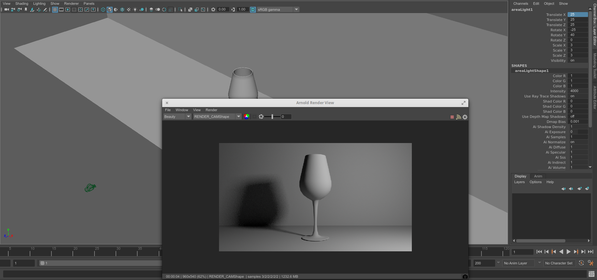
Wir können nun in dem Hauptpanel das Licht verschieben, rotieren, skalieren und es wird automatisch die RenderView aktualisiert.
Weiterhin kann man genaue Daten mithilfe der ChannelBox eingeben. Die Werte für das erste Licht sind folgende:
| Attribute | Value |
|---|---|
| Translate X | 25 |
| Translate Y | 25 |
| Translate Z | 25 |
| Rotate X | -25 |
| Rotate Y | -50 |
| Scale X | 3 |
| Scale Y | 7 |
| Scale Z | 3 |
| Intensity | 4000 |
Nun nachdem die Position des Lichtes stimmt, passen wir die Intensity an, auf einen Wert von 5000.
Wir erstellen ein zweites Licht indem wir das erste Duplizieren (Strg-D) und passen folgende Werte an:
| Attribute | Value |
|---|---|
| Translate X | -25 |
| Rotate Y | -40 |
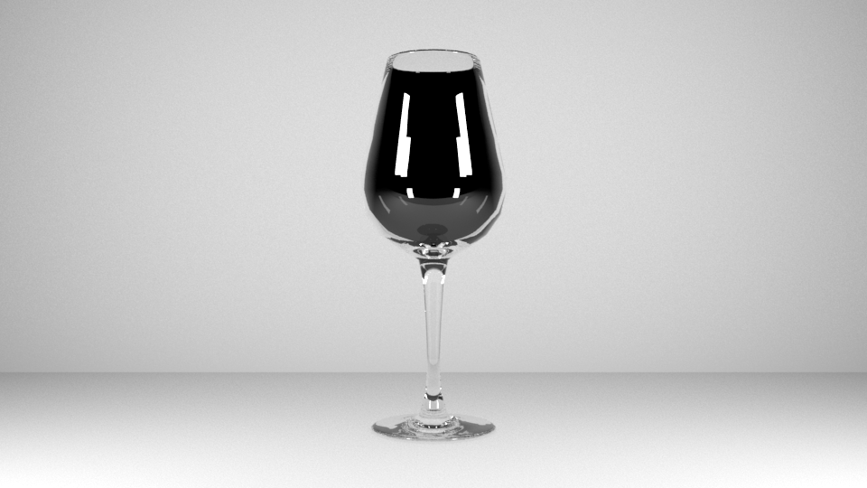
Speichern unter “weinGlas_06.mb”.
Materialien
Wir erstellen nun die Materialien für die einzelnen Objekte. Ein Material definiert wie das Objekt später gerendert wird.
Um ein Material zu erstellen, mit RMB auf das Objekt klicken und in dem Menü “Assign New Material…” auswählen.
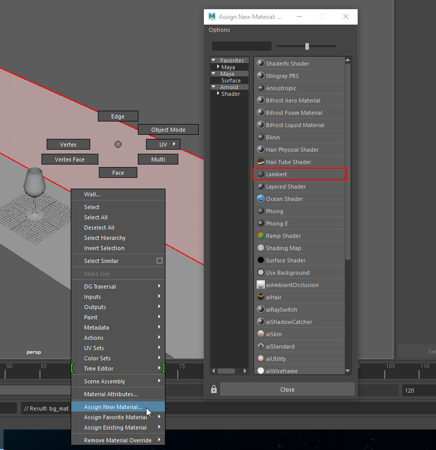
Wall
Für das Objekt “Wall” werden wir ein neues Lambert Material verwenden. Hat man das Objekt erstellt öffnet sich automatisch der “Attribute Editor”.
In dem Attribute Editor benennen wir das Material um auf “bg_mat” und setzen die Farbe auf Weiß.
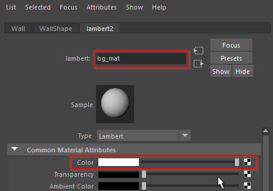
Floor
Für den Boden verwenden wir das gleiche Material. mit RMB auf das Objekt klicken und in dem Menü “Assign Existing Material” > “bg_mat” auswählen.
Weinglas
Da das Glas Material ein komplexeres Material ist, verwenden wir das Material “Standard Surface”. Das Material ist in mehrere Kategorien aufgeteilt. Wir benennen das Material “glas_mat”.
Ein Glas Material hat keine Diffuse Reflektion, also schalten wir diese aus indem wir in dem Bereich “Weight = 0” setzen.
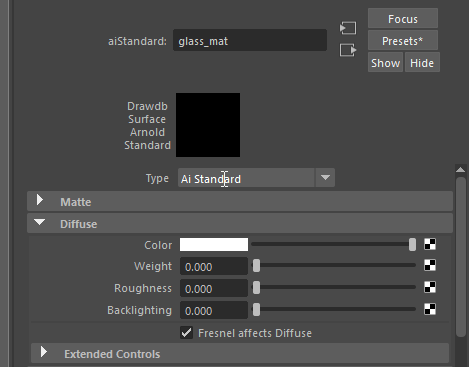
Ein Glas Material Reflektiert seine Umgebung. Daher schalten wir Specular Reflektion ein indem wir in dem Bereich “Weight = 1” setzen.
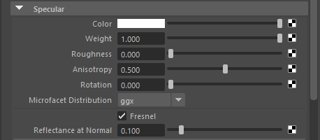
Ein Glas Material ist Transparent und hat einen Lichtbrechungsfaktor (“Refraction”). Wir schalten “Refraktion” ein indem wir wieder “Weight = 1” setzen und einen IOR (Index of Refraction) von 1.6 verwenden.
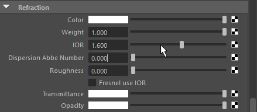
Nun ist das Glas Material fertig. Transparenzen werden in der Maya Vorschau nicht angezeigt und deswegen ist das Weinglas nun schwarz. Beim Rendern wird es jedoch transparent sein.
Hier nochmals zur Übersicht welche Werte wir angepasst haben:
| Attribute | Value |
|---|---|
| Diffuse | |
| Weight | 0 |
| Specular | |
| Weight | 1 |
| IOR | 1.55 |
| Roughness | 0 |
| Refraction | |
| Weight | 1 |
Zusätzlich müssen wir noch bei dem “wineglasshape” noch “Opaque” deaktivieren um transparente Schatten zu bekommen.
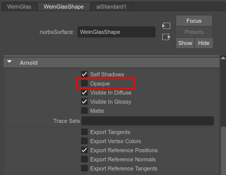
Speichern unter “weinGlas_07.mb”.
Rendern
Nun sieht das Ergebnis schon recht gut dar, jedoch ist das Glas unerwartet schwarz und nicht transparent. Der Stiel des Glases sieht schon richtig aus.
Um den Render Vorgang zu optimieren, wird nur eine bestimmte Anzahl von Lichtbrechungen berechnet. Standardmäßig werden 2 Brechungen berechnet. In dem Falle von unserem Glas haben wir jedoch 4 Brechungen.
- Um die Anzahl der Brechungen zu erhöhen, öffnen wir die Render Settings (Windows > Rendering Editors > Render Settings)
- Hier wechseln wir auf den Reiter “Arnold Renderer”.
- In dem Bereich “Ray Depth” setzen wir den Wert für “Refraction” auf 4.
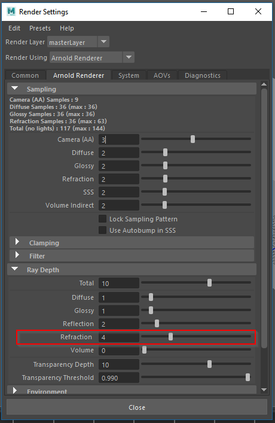
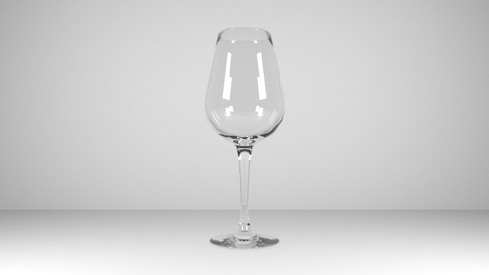